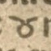
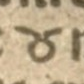


What we proceed to call the Albanian Catholic alphabet symbols are four symbols that were used in Albanian literature written in the Latin script from the earliest work of literature in the language (1555) till the onset of the 20th century (1904).
The symbols in question are
All works written with these symbols were written by Catholics, and almost all of them were written for religious purposes, hence the label. All of the books written in the alphabet published in the 17th–18th centuries were printed in Italy, most commonly by Propaganda Fide in Rome, while in the 19th centuries a good number of works using these symbols began to be printed by the Jesuits of the Xaverian College in Shkodër, which is why, within that context, the alphabet is also known as "Old Shkodran". The alphabet fell out of use gradually after the creation of the Bashkimi alphabet (1895), which got rid of these symbols for a much cheaper to print in pure Latin orthography.
The three earliest symbols, ⟨ξ⟩, ⟨ɛ⟩ and ⟨ȣ⟩, most likely descend from Serbian Old Cyrillic ⟨ѯ⟩, ⟨з⟩ and ⟨ꙋ⟩, while the ⟨λ⟩ only appears from Bogdani (1685) onwards and is taken directly from Greek. The orthography employed in these various works is not uniform over time, but these symbols are shared.
Most symbols can already be well represented with existing codepoints: ⟨Λ λ⟩ as the Greek U+039B ~ U+03BB, ⟨Ȣ ȣ⟩ as the Latin U+0222 ~ U+0223, and ⟨Ɛ ɛ⟩ as Latin U+0190 ~ U+025B, as well as the additional symbols only in Buzuku, ⟨ћ⟩ as U+045B, ⟨Ʒ ʒ⟩ as U+01B7 ~ U+0292 and the ⟨cz⟩ ligature as U+00E7. Conversely, currently Greek ⟨Ξ ξ⟩ is used to encode the symbol in lack of a better alternative, but we consider this misleading both visually and semantically. Even if that were likely its ultimate origin, it was perceived as a distinct letter, and over time acquired a stable and distinct shape, not going above the x-height in its lowercase form, and in the latest publications gaining a circular bowl shape in its uppercase form. Some works using the symbols also have some text in Greek, which would make the idea of simply entrusting the issue to the typeface non-trivial to implement. We propose the addition of two new codepoints for it.
We also propose to add annotation to the existing LATIN SMALL LETTER OPEN E and its capital form mentioning its use as Albanian z.
| year | dh | Dh | ll | Ll | y | Y | z | Z |
|---|---|---|---|---|---|---|---|---|
| 1555 |
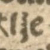
|
not used |
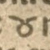
|
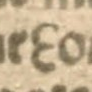 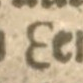 | ||||
| 1618 | 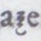 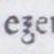 | 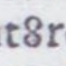 | 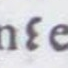 | |||||
| 1635 | 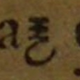 | 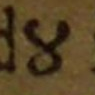 | 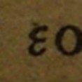 | |||||
| 1664 | 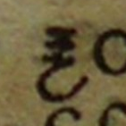 | 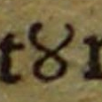 | 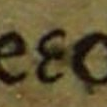 | |||||
| 1685 | 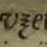 | |
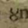 | 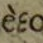 | ||||
| 1689 |
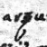
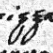
|
not used | 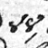 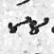 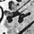 | 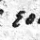 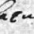 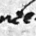 | ||||
| 1706 | 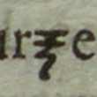 | 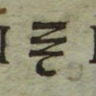 | 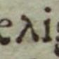 | 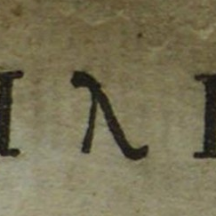 | 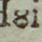 | — | 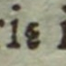 | 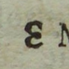 |
| 1856 | 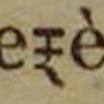 | 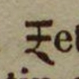 | 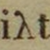 | 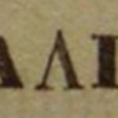 | 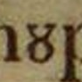 | 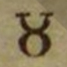 | 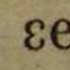 | 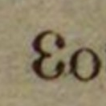 |
| 1873 | 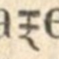 | 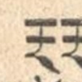 | 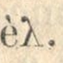 | — | 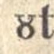 | — | ||
| 1887 | — | — | ||||||
| 1900 |
|
— |
|
|
||||
| 1904 | — | — | — | |||||
| image | encoding |
|---|---|
| ⟨ћ⟩ CYRILLIC SMALL LETTER TSHE | |
| ⟨ʒ⟩ LATIN SMALL LETTER EZH | |
| ⟨Ʒ⟩ LATIN CAPITAL LETTER EZH | |
| ⟨ç⟩ LATIN SMALL LETTER C WITH CEDILLA |
| image | possible name |
|---|---|
| LATIN SMALL LETTER ALBANIAN XI | |
| LATIN CAPITAL LETTER ALBANIAN XI |
But Buzuku's alphabet does not seem to have had followers, for in Pjetër Budi's (1566–1623) works, as for instance in the Christian Doctrine (1618), we meet a different script, although founded on the Latin one. Budi's alphabet, with slight changes, was employed in the Dictionary (1635) by Frang Bardhi and in Cuneus Prophetarum (1685) by Pjetër Bogdani. It was preserved until the outset of the 20th century by the Jesuit priests of Shkodër, who continued to publish in it. This system is usually called "the Alphabet of the Ancient Writers of the North", for it was used by them; it is also referred to at times as "the Catholic Alphabet", because only the Catholic part of the Albanian population wrote in it. It remained, however, restricted to the province of Shkodër.